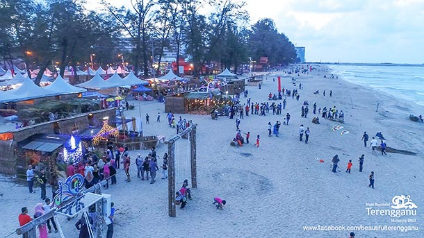

Terengganu
Terengganu

Pantai Batu Buruk
Pantai Batu Buruk merupakan pantai yang boleh dijalankan aktiviti mandi-manda yang terletak di Terengganu.Pantai Batu Buruk merupakan pantai terdekat dari pusat bandar, sekitar 1.5 kilometer. Ini menjadikannya sebagai tumpuan bagi rehlah bagi ramai penduduk tempatan selain pelancong.